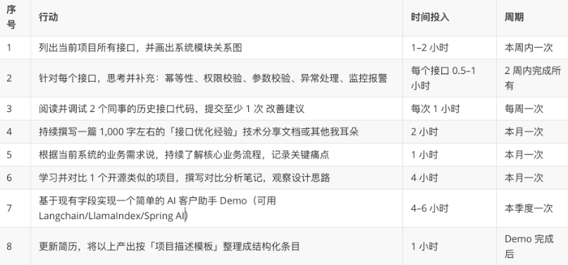
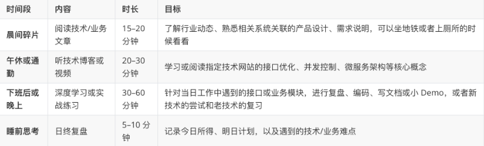

爱海贼的无处不在的心得
做个笔记！！！
转载：做好当下，布局未来：写给每一个觉得“实习没价值”的程序员
第一章：什么是“做好当下”？
- 把你的项目吃透，不是会写接口，而是懂业务
- 把你目前经手的所有接口对应的数据库表列出来，理解每张表是干什么的；
- 把整个CRM系统的模块结构画一张图（画给自己看）；
- 问问你的主管或者项目经理：“我们这个CRM系统，有哪些地方是公司特别重视的？”（了解业务重点）
- 研究一下开源的CRM系统或商业的CRM系统，比如悟空CRM，看看你们公司跟他们设计的异同。
- 把每个“看似简单”的接口写到极致
- 有没有处理幂等性？是不是重复提交就挂了？
- 有没有用户权限校验？数据隔离？
- 参数校验和异常处理够严谨吗？
- 是不是考虑了高并发下数据一致性？
- 有没有配好监控？出错了好排查？
- 测试用例是否覆盖边界情况？
- 接口多个人操作的时候会出现覆盖情况吗？
- 接口如果对接了第三方，自己写的HTTP代码支持重试吗？
- 接口业务层处理完，如果还需要异步发送消息如何设计？
- 你有benchmark过这个接口的性能瓶颈吗？
- 这个接口的业务目标是啥？
- 有没有设计成一个通用模板（比如批量新增 vs 单个新增）？
- 如果让我重构，我能否抽象出更优的代码结构？
- 学会逐渐从”写接口”到”懂业务”
- 画系统架构图
- 追问五个为什么（1. “这个接口给谁用？→ 销售部门 → 用来做什么？→ 记录客户拜访 → 为什么重要？→ 涉及绩效考核…“）
- 对比行业方案
- 建立”问题雷达”：把每个bug变成知识库
- 给每个bug贴标签：是业务理解偏差？代码逻辑漏洞？还是数据边界问题？
- 做”错题本”：记录典型bug场景+解决方案（比如用Notion建表格）
- 主动复盘：每周找出重复出现的3类问题，针对性学习
- 举个实例：某实习生发现”客户状态同步延迟”的bug，深挖后发现是消息队列堆积导致的，后来他不仅解决了问题，还：
- 整理了RabbitMQ常见故障处理手册
- 给团队做了次”消息队列保障机制”的分享
- 把这个案例写成技术博客
第二章：什么是“布局未来”
- 明天的你，要去哪？你知道吗？
- 所有技术最终都能“AI化”，你敢往上叠层吗？
- 看懂别人的代码，比写新代码更重要
- 横向偷师
-
- 蹭会议*：主动申请参加需求评审会，哪怕只是旁听
- 读PR：看同事的代码提交，重点看fix/refactor类的改动
- 问运维：找运维同学喝奶茶，问”我们系统最常出什么故障？“
-
第三章 ：简历如何写出深度？
- 项目描述要「结果＋指标＋你做的事情＋技术栈」
- 简历关键词：突出“工程意识”与“业务洞察”
- 工程意识（Engineering Mindset）：
- 幂等性设计、并发控制、接口监控、限流熔断、重试机制、回滚补偿……
- 写在职责里，让对方能在一句话里读出你对高质量工程的追求。
- 业务洞察（Business Insight）：
- 客户线索生命周期、销售漏斗分析、渠道 ROI、客户分类模型、复购预测……
- 写在项目简介或成果里，让对方知道你不仅写代码，还能理解行业和业务价值。
- 工程意识（Engineering Mindset）：
- 用开源或业界对标项目为简历加分
第四章：真实行动建议清单

- 不要把所有动作都堆在一天做完，分散到每周或每月，都能持续积累。
- 保持「一周一个小产出」的节奏，无论是文档、PR、Demo，都能体现你的动力和执行力。
- 产出可以是博客、内部分享会 PPT、GitHub 仓库、简历更新，形式不限，目的都是留痕。
第五章：每日精进计划
持续成长，就靠“天天做一点，滴水穿石”。结合我自己的经验和网友的经验，可以根据自己的工作节奏和空闲时间做微调，但原则是“每天至少留出 30 分钟到 1 小时专注提升”。
1. 时间分配建议（每日）

早晨30分钟：
- 读一段开源项目代码（推荐：Spring Boot/MyBatis源码注释版）
- 记录1个业务关键词（如”线索孵化率”），下班前找人请教 午休15分钟：
- 用ChatGPT问：“CRM系统中接口设计有哪些隐藏坑？”
- 把答案整理成Markdown笔记 下班前30分钟：
- 选一个老接口，用JMeter做压测（哪怕只测10次）
- 截图”优化前/后”的QPS数据 周末2小时：
- 在本地启动个Demo项目，试水AI功能（推荐：Spring AI+Ollama本地模型）
2. 每周专项主题
为了避免每天内容过于分散，建议每周聚焦一个专项主题，持续 5 个工作日，然后下周切换。主题举例如下：
- 接口健壮性
- 周一：参数校验和异常处理最佳实践
- 周二：幂等性设计方式对比（Token、幂等表、业务去重等）
- 周三：高并发场景下的锁与队列（Redis 分布式锁、消息队列削峰）
- 周四：接口监控与告警（Prometheus + Grafana, 日志埋点）
- 周五：实践：对自己写过的一个接口进行“鲁棒性全家桶”优化
- 数据库调优
- 周一：索引原理与常见误区
- 周二：Explain 分析与优化思路
- 周三：分库分表与水平/垂直拆分策略
- 周四：读写分离与缓存预热
- 周五：实践：对业务场景做一次全流程调优，并写性能报告
- 微服务与架构设计
- 周一：微服务拆分原则与边界划分
- 周二：服务注册与发现（Eureka、Consul）
- 周三：API 网关（Zuul、Spring Cloud Gateway）
- 周四：链路追踪（Sleuth + Zipkin）
- 周五：实践：设计一个“CRM 订单服务 + 客户服务”小系统并绘制架构图
- AI × CRM
- 周一：了解主流开源 embedding知识和RAG知识、框架等
- 周二：用Spring AI或Spring AI Alibaba 构建小型 CRM 数据索引
- 周三：用本地 LLM 做客户意图分类 Demo
- 周四：用 Langchain Agent 实现“下一步销售建议”小机器人
- 周五：总结：写一篇「CRM 项目 AI 化实践」技术笔记
3. 每日复盘模板
每天坚持写 3 条日终复盘，记录以下要点：
- 今日完成：今天在项目/学习中做了哪些事情？
- 收获与问题：学到了什么？遇到了哪些问题，暂时还没解决？
- 明日计划：明天要做什么？哪个接口要再优化？哪个主题要继续？
示例：
2025-07-09
今日完成：在“线索分配”接口中加了幂等校验；阅读完《Redis 分布式锁实战》；写了 500 字优化总结。
收获与问题：掌握了 Redisson 的锁超时方案；遇到一个死锁场景，需进一步调试。
明日计划：复盘那个死锁 issue；阅读并实践 API 网关限流配置。
4. 利用工具提高效率
- 书签与笔记：用浏览器书签分类存放关键文档，用有道云笔记或者枫叶云笔记做每日/每周笔记。
- 代码片段库：把常用的幂等、鉴权、限流代码片段整理到 Snippet 工具。
- 定时提醒：用日历或 Todo 工具设每日/每周提醒，确保复盘和阅读不被工作 “淹没”。
第六章：AI 加持业务系统
- 从业务痛点出发：AI 在 CRM 中能解决什么？
第七章：业务经验如何转化为面试竞争力
- 用 STAR 方法说项目故事
- Situation：我在一个大存储公司实习，负责 CRM 系统中客户线索管理模块。
- Task：公司希望提升线索处理效率并减少人工误操作。
- Action：
- 设计幂等机制，避免重复提交；
- 用 AOP 统一处理鉴权逻辑，删除手工权限校验；
- 编写单元测试与自动化测试覆盖；
- 穿透日志 & Prometheus 监控，加入异常告警；
- 后来做了 AI Demo，为销售生成跟进建议。
- Result：
- 处理效率提升 30%，月线索量提高 1,500 条；
- 接口异常率下降 50%，运维工单少一半；
- AI Demo 成果撰写成博客，阅读量 >1,500；
- 面试前的“项目梳理术”：从高层到细节
在面试前做一个项目梳理流程：
- 挑重点项目：选 CRM 项目，因为它涉及业务+技术+AI能力。
- 列功能模块：梳理模块图，理清职责边界。
- 提前演练讲稿：画流程图，用录屏练习，避免表达不清。
- 预判问题：接口如何幂等？高并发如何处理？AI 模型选型？准备好回答
- 熟练代码结构：了解目录结构与关键算法逻辑，方便现场应答
- 突出「业务 + 技术」双重价值
面试官最喜欢的答案，是“你不仅用技术，还懂业务”。示例：
我不仅写接口，还了解 CRM 的销售漏斗模型，包括线索获取 → 分配 → 跟进 → 成交，每个阶段我都做了数据监控，比如分配延迟、无效线索比率等。
这种回答，能同时击中“对业务敏感”“有系统思考”“有数据意识”三大面试评估项。
- 面试问答也是双向的双向沟通
面试不仅你在说，面试官也在观测你的好奇心：
- 面试结束时，准备 3–5 个问题提问，例如“你们 CRM 系统的下一步规划是什么？有没有 AI 方向的探索？”
- 这会让面试官知道：你不仅胜任技术，还关注产品、企业成长。
这套方法应用在 CRM 项目经验里，会让你在 30 分钟通话里，展现你的技术深度、业务敏锐、学习意愿、沟通意识。
第八章：团队成长秘籍——在实习中自驱学习、创造价值
海贼的话
- 先不要想着先看代码，而是先把项目的基本业务和基本功能梳理下，先理解业务，形成产出
- 理解后，在看代码，看代码先看pom.xml，梳理 下这个项目用到了哪些依赖、哪些组件梳理出来，形成产出
- 在通过数据库客户端导出数据库表结构，对自己感兴趣的业务模块、功能，找到相关界面，先从界面定位出来后端接口和和表，先从自己感兴趣的功能模块，入手。本质就是梳理某个功能的CRUD流程
- 去问问领导，公司内部是否有使用AI，如果有和允许，也是阅读的帮手
- 这种核心要做的一件事就是:必须强迫自己每天输出至少一份总结文档，即使公司有了对应的说明，但是他不是自己的内化的知识，坚持一阵，这样才能把公司交付给自己的东西演变成自己的，大部分学生去实习，还是有些外包思维严重的，下班学习高大上的内容，不学习公司的业务和技术。 工作了1-3个月，没有总结和沉淀几份文档，这个是很危险的，所以非常建议这个小伙子，从今天开始，每天都能沉淀内容
- 直接说到我的痛点了，我在上一家公司每天下班后就学习高大上的内容。结果后面单独负责一个项目的时候，有的业务都没搞清楚，做的一塌糊涂。后面意识到这种问题，每一周都会输出相关模块的er图结构，业务逻辑流程等。所以刚进入公司的一定要先熟悉公司业务，一定要先熟悉公司业务，一定要先熟悉公司业务。
12条程序员入职后快速掌握业务与技术的经验
- 工作产出方面
- 日常总结与输出
- 问题复盘与记录
- 项目学习方面
- 环境搭建与熟悉
- 项目依赖梳理
- 尝试实战练习
- 主动代码质量分析-SonarQube进行静态代码质量分析
- 业务熟悉方面
- 全流程业务梳理
- 积极沟通与融入
- 主动了解与参与业务
- 态度
- 日常积极参与技术讨论
- Mentor方面
- 找能知道你的Mentor